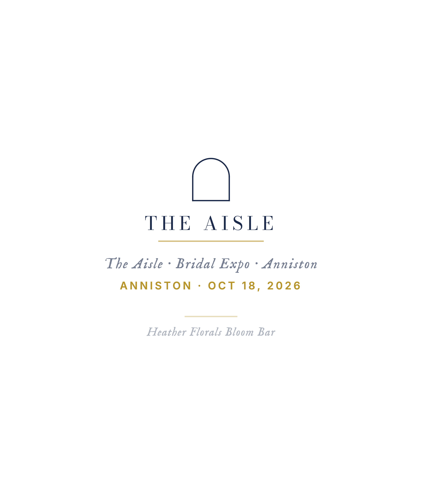

Stacked type, distressed print, Fourthwall POD. Drafts only — edit before ordering.
Original concepts — identity & place
Born Here / Stayed Here / Buried Here
The SL thesis in six words. Stacked bold on tobacco brown. White or gold distressed print.
From Here / Stays Here / Ends Here
Austere. Defiant. Limited run after the first big profile drops. Cult favorite.
Deep Roots / Slow Burn / Long Memory
Three phrases, no shared word. How Southern stories actually move.
Justice & witness
They Sat Down So We Could Stand Up
Freedom Riders reference. Anniston 1961 — the bus burning on Hwy 78. Quiet tribute, no names needed.
Bear Witness
Two words. The whole purpose of SL. What a journalist does. What a neighbor does. What Alabama still needs.
Named / Claimed / Remembered
The counter-erasure shirt. People whose stories got buried. SL's mission made visible.
The South Is Not One Thing
Direct rebuttal to the monolith myth. Wearable thesis statement. Strong for community events.
Faith & resurrection
Isaiah 58:6 — Loose the Chains
The justice-faith crossover. Light natural base, dark ink. Feels like a church camp shirt but says something harder.
The Seed Must Die
From your March 31 sermon. Loss as precondition for growth. Works for SL — every profile is a seed story.
Broken / Still / Standing
The resurrection thread without naming it. Every SL subject. Every recovery story. Out of the Shadows adjacent.
Tend the Flock
Triple meaning: pastoral call, marriage companion (Tend), agricultural roots. Could cross-sell to pastors in the Guide Network.
Local history — Calhoun County & Northeast Alabama
Anniston — The Model City
Reclaims the nickname with irony intact. Est. 1872. Clay brown = the actual dirt of the county.
Alabama + Chief Ladiga Trail
State shape with trail dotted across NE Alabama. Two start/end points marked. Trail name under. Strong for outdoors/trail crowd AND local history crowd.
Alabama — Where the Stories Live
State outline, text inside. Simple. Tourist-friendly but SL-branded. Strong seller at farmers markets + Aisle expo table.
Anniston Landmarks — Still Here
Stacked place names + "Still Here" anchor. Fort McClellan, Cold Water Mountain, the main drag. Hyperlocal pride.
Ladiga Trail Counties
Stacked county names with trail mileage at bottom. Appeals to hikers, trail community, and hyperlocal Alabama pride simultaneously.
Alabama state shape — concept variations
Alabama + Trail (Minimal)
Clean state outline, dashed trail line cutting across NE corner, trail name below. Forest green base, light ink.
Alabama Outline (Ghost) + "Stories Beneath the Surface"
Outline only, not filled. More minimalist. Subtle for people who don't want to shout their state — they know.
Alabama + Anniston Pinned
State shape with a single pin drop on Anniston. "Where we started." Hyperlocal pride shirt — tells people exactly where this is from.
The Aisle · Bridal Expo · Oct 18, 2026
The Aisle — Cream (Main Event)
Arch mark + wordmark in navy. Cream/petal base. Primary event shirt for vendors and staff, Oct 18 Anniston.
The Aisle — Navy/Gold (Vendor)
Same arch mark in gold on navy. Vendor gift and speaker shirt. Classic Alabama bridal palette.
Chief Ladiga Trail — 33 Miles
CLT Wordmark — Forest
Stacked bold on forest green. Primary CLT trail shirt. Pairs with the Southern Legends CLT profiles.
CLT Abbreviation — Tobacco
Three letters, big. "The trail that connects us." For people who know. Tobacco base.
The Model City · Anniston · est. 1872
The Model City — Black
Anniston's original civic boast, reclaimed. IM Fell English serif on black. Cream ink. Pride shirt for people who know the real story.
The Model City — Natural
Same design on natural/parchment. Dark ink. Softer, more vintage. Good for the farmers market crowd.
Bloom Bar · Heather Florals
Bloom Bar — Front
Heather's mobile flower market. Print-ready art for Fourthwall tee.

Bloom Bar — Back
Back panel design. Trail location + tagline.
Redbird Willow Farm · Founding Partner · The Aisle
Redbird Willow Farm — Sage
Founding partner vendor shirt for The Aisle. Stacked bold on sage green. Staff/gift shirt for expo day.
Redbird Willow Farm — Natural
Same stacked design on natural parchment. Dark ink. More vintage — great for market days.
Bipolar & Proud · Mental Health Merch — full mockups →
Bipolar & Proud — Dark
Fraunces serif on black. Quiet, dignified. Not a shout — a statement for people who know. Personal brand crossover with SL mental health coverage.
Still Here — Natural
Two words. Cream base. For survivors. The simplest possible statement about persistence. Full mockup at southern-legends bipolar brand folder.
Freedom Riders · Dave Dennis Tribute — full preview →
Dave Dennis — Black
Hedcut portrait shirt honoring Freedom Rider Dave Dennis. Full art uses PNG hedcut — see full preview for the complete design with portrait and bus imagery.
Dave Dennis — Natural
Same tribute design on natural base. Dark ink. The hedcut portrait art lives in the freedom-riders folder — pair with this card when ordering.